Responsive, deuxième tour : les lignes de l'offre, le micro, le grand écran
Site de test dabc3d9, 19.11.2026. Chaque capture montre le vrai site avec tous les points que tu as validés au premier tour, plus le nouveau dessin, injecté dans le navigateur. Rien n'est écrit dans app.css.
Déjà tranché au premier tour
- R1 A : micro de 72 px gardé, 24 px réservés sous les boutons.
- R3, R9 : vue compacte des lignes jusqu'à 699 px de large, désignation de 48 px. Leur dessin change ci-dessous, à ta demande.
- R4, R5, R6, R7 : validés tels quels.
- R8 : fondu au bord des filtres.
- R2 A et R10 a B : onglets en colonne à gauche (téléphone couché, petite fenêtre PC). Il reste la place du micro.
1. Les lignes de l'offre, plus légères
Ce que tu as demandé, et ce que j'ai fait :
- Les pavés gris disparaissent. Un cadre fin, sans fond. Le cadre visible fait 34 px de haut ; la zone à toucher reste à 48 px, comme le demande
CODING_RULES.md, et ne se voit pas. - Chaque champ a la largeur de son contenu. Quantité : 2 chiffres par défaut. Prix : 3 chiffres. Le champ s'élargit quand on tape plus long.
- Les colonnes restent alignées. Toutes les lignes partagent les mêmes colonnes. Si un prix passe à 5 chiffres, la colonne Prix s'élargit pour toute l'offre, et l'en-tête « Qté Prix Total » suit.
- « forfait » reste en petit gris, à côté du chiffre, sans bloc autour.
- La poubelle se place au milieu de la ligne (A) ou en face de la désignation (B).
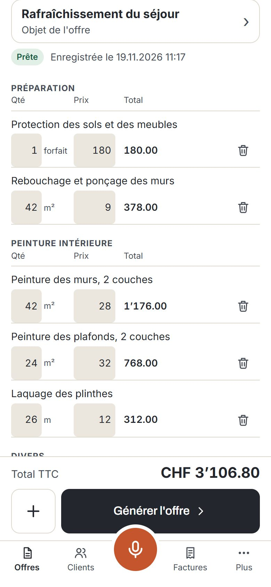
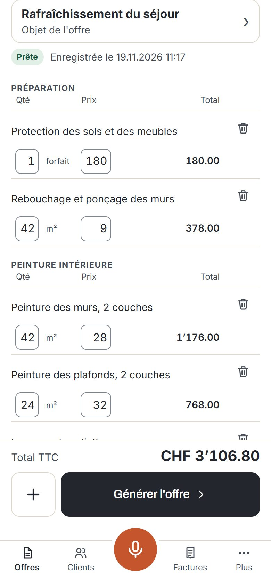
Le champ qui s'élargit
Les autres tailles
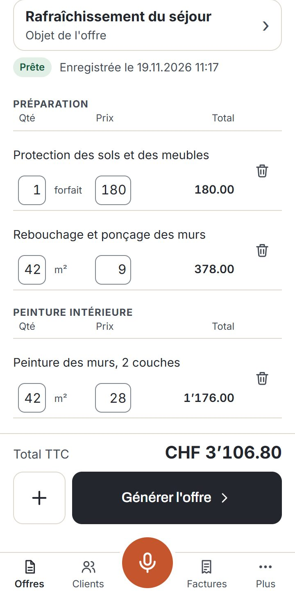
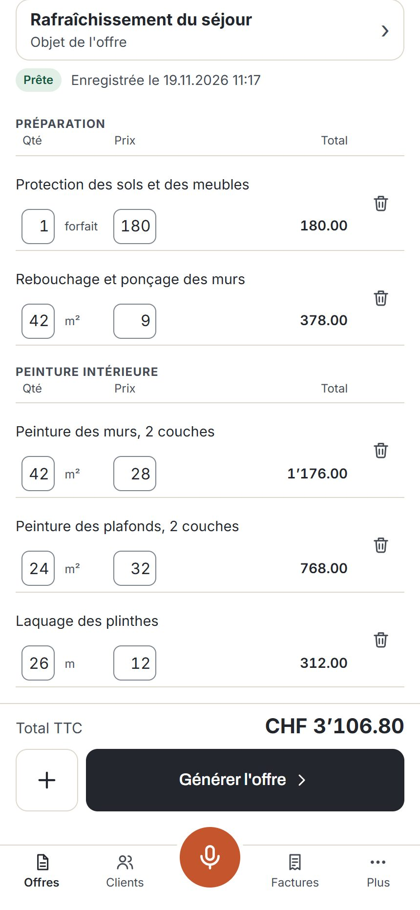
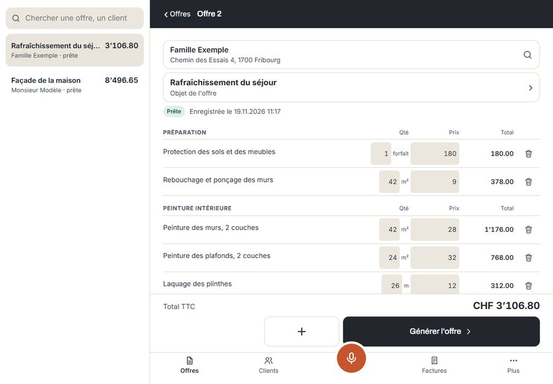
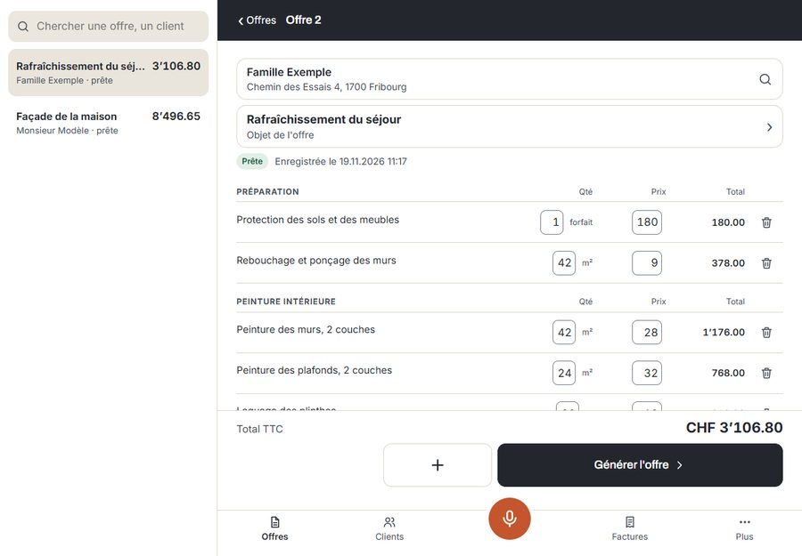
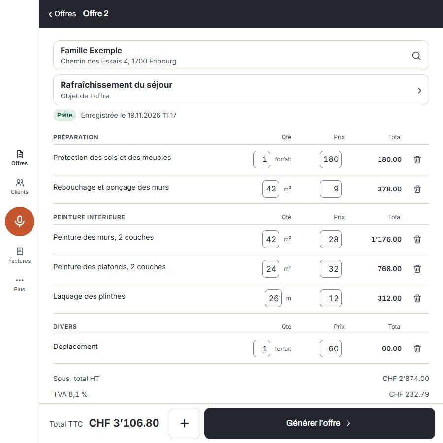
| Mesure, téléphone 390 px | Avant | Après |
|---|---|---|
| Fond des champs | gris plein | aucun, cadre de 1 px |
| Cadre visible / zone à toucher | 48 / 48 px | 34 / 48 px |
| Champ quantité / prix au repos | 44 / 60 px | 46 / 56 px |
| Hauteur moyenne d'une ligne | 82 px | 97 px |
| Champs qui chevauchent la désignation (360, 390, 430) | 0 à 390, 2 à 430 | 0 partout |
Deux réserves :
- Safari et la largeur automatique. La largeur qui suit le contenu repose sur une propriété CSS récente (
field-sizing). À ma connaissance, Safari ne l'a pas encore. J'ajoute un petit script qui règle la largeur pendant la frappe, à vérifier sur ton iPhone. - La hauteur des lignes. Une ligne gagne 15 px par rapport à aujourd'hui, à cause des 48 px de R9.
Ton choix pour les lignes
2. Le micro dans la colonne de gauche
Au premier tour, le micro était en haut de la colonne, loin du pouce. Les deux places que tu as citées, sur un téléphone couché :
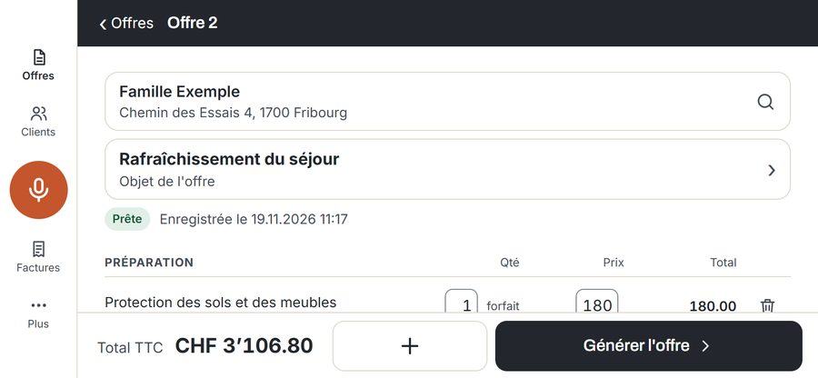
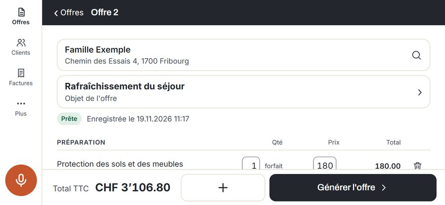
Dans les deux cas, l'offre garde 274 px de hauteur (137 aujourd'hui). La même colonne sert à la petite fenêtre PC (capture de la section 1).
Ton choix pour la place du micro
3. PC 1920 px : trois volets au lieu d'une bande grise
Tu demandais mieux que « laisser » ou « centrer ». La place libre sur un grand écran peut porter le document de l'offre. Aujourd'hui, « Document à côté » existe déjà, mais il remplace la liste des offres. À partir de 1800 px, les trois tiennent ensemble : la liste, l'offre et le document, qui se met à jour à chaque correction.
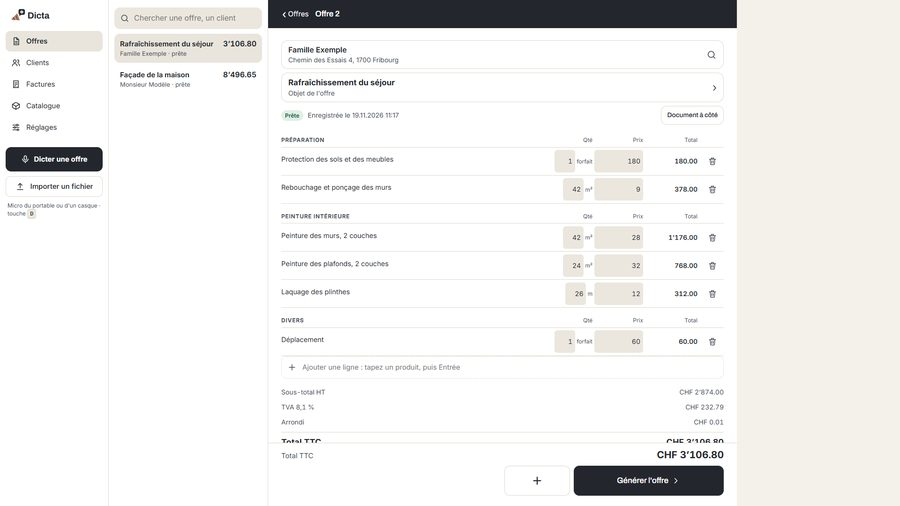
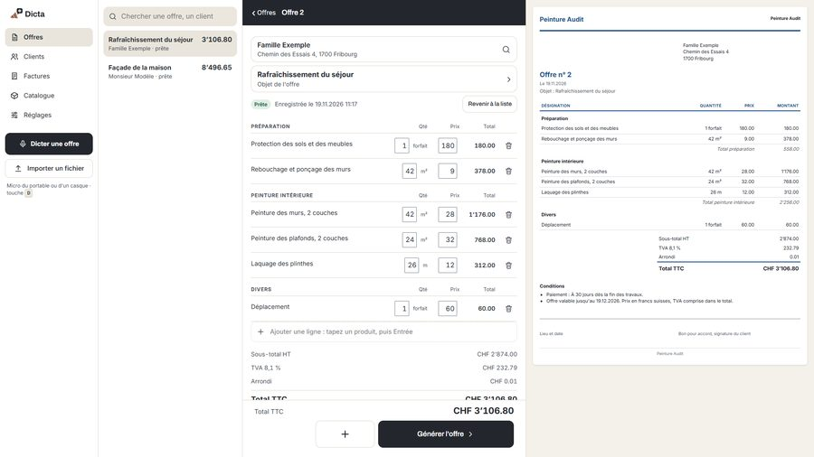
Ce qu'il faudra régler en le codant :
- Ouvrir le document d'office à partir de 1800 px, sauf si l'artisan l'a fermé (le choix est déjà retenu par le navigateur).
- Changer le libellé du bouton. « Revenir à la liste » devient faux quand la liste reste visible : il deviendra « Fermer le document ».
- L'accueil ne change pas. Sa liste d'offres garde sa largeur, la bande grise y reste.
Ton choix pour le grand écran
Ce que cette maquette ne prouve pas
- Rendu par Chromium seulement. Sur iPhone, il reste à vérifier la largeur qui s'adapte pendant la frappe, le zoom des champs et les libellés de 11 px de la colonne de gauche.
- Détails relevés, corrigés pendant le code : un champ caché dépasse de 1 px à droite dans la fenêtre PC de 900 px ; sur une rangée (tablette, PC), les cadres de quantité ne s'alignent pas entre « forfait » et « m² ».
- Les contrastes de la marque seront mesurés à la recette.
Copier mes réponses
Ce texte se remplit avec tes choix. Copie-le et colle-le dans la conversation.
Copié.